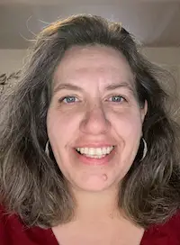
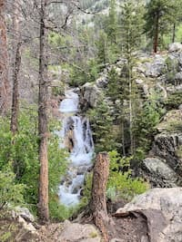

My name is Jennifer Waldyke and people call me Jenn. I was born in Provo, Utah and grew up in Alberta, Canada. I currently live in Lakewood, Colorado with my husband, Dan and dog, Edna. We have 2 sons. Our oldest is going to school at BYUI studying Mechanical Engineering. Our youngest son is serving his mission in the Tegucigalpa, Honduras mission.
Mountains of Colorado

I love exploring Colorado. I especially love to hike in the Colorado mountains. On this particular trip, this waterfall was not far from our campsite but was obscured from view. Thankfully as we were hiking and enjoying the area, one of our group members located it and shared this beautiful site.